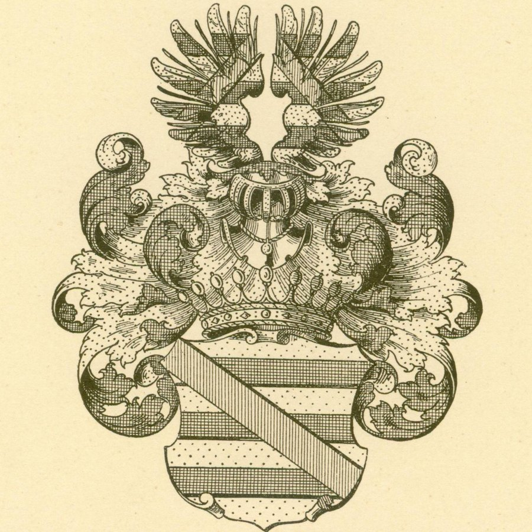

Анна Юлія
1776–1845
Була заміжня двічі: вперше — за графом Каролем Красицьким герба Рогаля, власником Рлуші; вдруге — за генералом російських військ Станіславом Шостаковським.

Граф, мальтійський командор, посол на Великий сейм. У «Економічних примітках» 1798 року — «граф і кавалер Антоній Плятер», власник Дубровиці й двох десятків навколишніх сіл.
Юзеф Антоній Вільгельм Броель-Плятер народився 13 червня 1750 року в Шатейках. Він був сином Вільгельма Яна та Петронели з Нагурських. Після продажу у 1771 році зайнських маєтностей того ж року придбав Дубровицю у Міхала Бжостовського.
Свою резиденцію збудував у Воробині, поруч із Дубровицею. Там мав велику бібліотеку та чудову колекцію творів мистецтва. Володів також Пульмами біля Володави та Загороддям біля Кременця.
У 1776 році був послом на Жмудський сейм, у 1788-му — послом на Великий сейм. Був прибічником Конституції 3 травня. У 1790 році отримав орден Святого Станіслава, у 1792-му — орден Білого Орла.
Помер у Воробині 2 вересня 1832 року. Похований у гробівці-каплиці на кладовищі в Дубровиці.

Був одружений з Терезою Абрамович (Абрагамович), власного герба або відміни герба Яструбець (1754–1826). Вона була дочкою Єжи, стародубського старости, і Марціанни (Марії) Дерналович герба Любич, а по батькові — онукою Анджея Абрамовича, дідича Ворнян, та N. Огінської. Для неї це був другий шлюб: першим її чоловіком був Тадеуш Слізень, гродненський земський суддя.
1776–1845
Була заміжня двічі: вперше — за графом Каролем Красицьким герба Рогаля, власником Рлуші; вдруге — за генералом російських військ Станіславом Шостаковським.
† 19.12.1784
Відома лише дата смерті.
1778–1786
Помер у дитинстві.
нар. 1786
Інших відомостей поки немає.
1782–1874
У 1800 році вийшла заміж за графа Станіслава Мануцці — сина графа Миколи Мануцці (а де-факто сина короля Станіслава Августа Понятовського) та Ядвіги Струтинської герба Сас, брацлавського маршалка і дідича Бельмонта, Опси, Богіні, Злотого та інших сіл у Єзероському повіті. Шлюб був бездітним.
Преса 1907: осквернення гробівця →1784 – 04.11.1838
Військовий армії Варшавського герцогства. Кілька років був візитатором (інспектором) шкіл у Київській, Подільській та Волинській губерніях, обіймав посаду волинського віцегубернатора. Після 1821 року відійшов від суспільного життя й оселився на віллі в Одесі. Холостяк; імовірно, наприкінці життя мав психічний розлад. Похований в Одесі.
1791–1854
У 1825 році одружився з Ідалією Аделаїдою Собанською герба Юноша (†1891), дочкою Міхала та Вікторії Орловської герба Любич. Масон. У 1829 році отримав з рук царя Миколи I графський титул. Окрім Дубровиці, володів Пульмою, Бельмонтом та Богіном. У 1833 році придбав у князя Євстахія Сангушка Іллінці (Лінці) в Липовецькому повіті.
Преса 1907: осквернення гробівця →За «Економічними примітками» маєток графа простягався по обидва боки Горині, Случі та Двірки. Містечко Домбровиця мало чотири ярмарки на рік, а у фільварку Воробин стояв дерев’яний панський дім.
Натисніть поселення, щоб відкрити його на інтерактивній мапі. Пунктирні — записані в «Примітках», але не потрапили на фрагменти аркушів.
У каплиці на парафіяльному кладовищі поховано графа та його нащадків. У 1907 році газета «Dziennik Wileński» повідомляла, що під час пожежі в містечку злочинці вломилися до каплиці й розбили саркофаги дочки графа, Констанції Мануцці, та сина, Ігнація Плятера.
Читати статтю в розділі «Преса» →Біографічні відомості подано за матеріалами, наданими дослідниками проєкту; дані про маєток — за «Економічними примітками» до атласу Волинської губернії 1798 року.